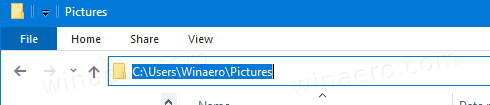
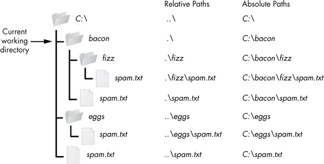

Keyboard shortcuts:
N/СпейсNext Slide
PPrevious Slide
OSlides Overview
ctrl+left clickZoom Element
If you want print version => add '
?print-pdf' at the end of slides URL (remove '#' fragment) and then print.
Like: https://progressbg-python-course.github.io/...CourseIntro.html?print-pdf
Using the file-system
Created for
Iva E. Popova, 2016-2025,

Introduction to OS Module
Introduction to OS Module
- What is the OS Module?
- The os module in Python is a built-in library that provides a portable way of using operating system dependent functionality such as reading or writing to the file system, managing paths, and interacting with the operating system.
- Key Features of the OS Module
- The os module provides a rich set of methods that are used to perform various operating system tasks such as file and directory manipulation, retrieving environment variables, and more.
- This module abstracts the underlying operating system functionality to provide a uniform interface across different operating systems.
- Importance of the OS Module
- For Python programmers, the os module is crucial because it allows the creation of platform-independent scripts. This means that the same Python code can often run on multiple platforms without modification, enhancing the portability and scalability of applications.
Basic Concepts: Paths and Current Working Directory
Basic Concepts: Paths and Current Working Directory
What are Paths?
- Paths are addresses that tell the computer where to find files and folders in its storage system, much like how an address helps you find a house in a city.
- Windows uses backslashes (\) to separate directory levels in the path.
- Linux and macOS use forward slashes (/) to separate directory levels in the path.
- Root path
- Windows can have many root directories designated with letters, such as C: or D:
- In Linux and macOS there is only one root directory, designated as / and
C:\Users\nemsys\tmp.txt
/home/nemsys/tmp.txt
CWD - Current Working Directory
- The Current Working Directory refers to the directory in which a user or a program is operating at a given time.
- When you open a command prompt or terminal session, you are placed in a default directory (usually your user directory). This is your initial current working directory. Every time you execute commands that involve files and directories without specifying a full path, those commands will operate relative to the CWD.
- How to know CWD while working on Command Prompt/Terminal
- How to know CWD while working with Windows Explorer
- When browsing files, the CWD is display in Address Bar, when you click on it:
# Windows (the CWD is shown in the prompt )
C:\Users\nemsys\MyDocuments>cd
C:\Users\nemsys\MyDocuments
# Linux/MacOS
nemsys@debian:~/Documents$ pwd
/home/nemsys/Documents
{kind=link}

Absolute vs Relative Paths
- Absolute Path: specifies the complete path starting from the root directory.
- On Windows, it typically starts with a drive letter followed by a colon.
- On Linux and macOS, it typically starts with a forward slash (/) representing the root directory.
- Relative Path: specifies the path relative to the current working directory
absolute_path = r"C:\Users\Username\Documents\example.txt"
absolute_path = "/home/username/Documents/example.txt"
# if CWD = '/home/username'
relative_path = "Documents/example.txt"
Absolute vs Relative Paths
{kind=link}

- The `.` path name represents the CWD
- The `..` path name represents the parent directory, which is the directory one level up from the CWD
CWD in Python script: os.getcwd() and os.chdir()
- The CWD is the directory from which your Python script is executed, and it plays a pivotal role in how Python accesses and manipulates files. Understanding and managing the CWD effectively can help ensure that your scripts work as intended, especially when interacting with the file system.
- Getting the Current Working Directory:
- To find out what the current working directory is in your Python script, you can use the getcwd() function from the os module. This function returns the absolute path of the directory in which the Python interpreter is currently running.
- Changing the Current Working Directory
- If you need to change the current working directory during the execution of your Python script, you can use the chdir() function, also from the os module. This allows your script to modify its working directory context, which affects where it reads from and writes to files by default.
import os
cwd = os.getcwd()
print("Current Working Directory:", cwd)
import os
# Change the directory to "/path/to/your/directory"
os.chdir("/path/to/your/directory")
# Verify the change
new_dir = os.getcwd()
print("The current working directory has been changed to:", new_dir)
os.path Module
os.path Module
Introduction
- The `os.path` module in Python provides functions for common path manipulations, making it easier to work with file and directory paths in a platform-independent manner. This allows your code to work seamlessly across different operating systems.
- Some of the commonly used functions in the os.path module include:
- os.path.join(): Concatenates one or more path components intelligently, taking into account the platform-specific path separator.
- os.path.abspath(): Returns the absolute path of a given path.
import os
joined_path = os.path.join("folder", "file.txt")
print("Joined Path:", joined_path)
# Output: Joined Path: folder/file.txt
import os
abs_path = os.path.abspath("file.txt")
print("Absolute Path:", abs_path)
# Output: Absolute Path: /full/path/to/file.txt
Common Functions
- os.path.basename(): Returns the base name of a path (i.e., the filename without the directory).
- os.path.dirname(): Returns the directory name of a path.
- os.path.exists(): Checks whether a path exists.
import os
file_name = os.path.basename("/path/to/file.txt")
print("File Name:", file_name)
# Output: File Name: file.txt
import os
dir_name = os.path.dirname("/path/to/file.txt")
print("Directory Name:", dir_name)
# Output: Directory Name: /path/to
import os
path = "/path/to/file.txt"
exists = os.path.exists(path)
print("Path Exists:", exists)
# Output: Path Exists: True (or False if the path doesn't exist)
Common Functions
- os.path.isfile(): Checks whether a path is a regular file.
- os.path.isdir(): Checks whether a path is a directory.
import os
file_path = "/path/to/file.txt"
is_file = os.path.isfile(file_path)
print("Is a File:", is_file)
# Output: Is a File: True (or False if the path is not a file)
import os
dir_path = "/path/to/directory"
is_dir = os.path.isdir(dir_path)
print("Is a Directory:", is_dir)
# Output: Is a Directory: True (or False if the path is not a directory)
Directory Manipulations with Python
Directory Manipulations with Python
Introduction
- Understanding how to manipulate directories is crucial for various tasks in programming, such as organizing files, managing projects, and handling file I/O operations.
- All filesystem operations will be relative to CWD, unless you specify an absolute (full) path.
Listing Directories
- Listing Contents of a Directory
- To list the contents of a directory, you can use the os module's listdir() function.
- Filtering Directory Contents
- You can filter the directory contents based on specific criteria using list comprehensions or the filter() function.
import os
contents = os.listdir("directory_path")
print(contents)
# Output: ['file1.txt', 'file2.txt', 'folder1', 'folder2']
import os
files = [f for f in os.listdir("directory_path") if os.path.isfile(f)]
print(files)
# Output: ['file1.txt', 'file2.txt']
List the entire directory content
- To list the entire directory content, including subfolders, you can use the the os.walk function:
- Next example demonstrate how to list the entire content of CWD:
def list_dir_contents(dir_path):
"""
This function recursively iterates through the directory tree, yielding root, dirs, and files at each level.
It then prints the full path of each directory and file
Args:
dir_path: The path to the directory to list.
Returns:
None
"""
for root, dirs, files in os.walk(dir_path):
for directory in dirs:
full_dir_path = os.path.join(root, directory)
print(f"Directory: {full_dir_path}\n")
for filename in files:
full_file_path = os.path.join(root, filename)
print(f"File: {full_file_path}\n")
dir_path = os.getcwd()
list_dir_contents(dir_path)
Creating Directories
- Creating a Directory
- To create a directory in Python, you can use the os module's mkdir() function.
- Creating Nested Directories
- You can create nested directories by specifying the full path when calling the makedirs() function.
- If a directory alredy exists, these functions will throw File exists error
import os
os.mkdir("parent_directory")
import os
os.makedirs("parent_directory/child_directory")
Deleting Directories
- Deleting a Directory
- To delete a directory in Python, you can use the os module's rmdir() function.
- Note that,
os.rmdir()removes only empty directory. Otherwise,OSErroris raised. - This is safer than
os.removedirs(), which will delete even non-empty directories. - Deleting a Directory Tree
- To delete a directory and all its contents recursively, you can use the shutil module's rmtree() function.
import os
os.rmdir("directory_path")
import shutil
shutil.rmtree("directory_path")
Files Manipulations
Files Manipulations
Prerequisites: binary vs text files
- Text Files
- Contain human-readable characters (e.g., .txt, .csv, .json).
- Data is stored in encoded format, e.g. UTF-8 (will be discussed in later topics).
- Uses string operations (str).
- Binary Files
- Store raw data (e.g., .jpg, .png, .exe, .mp4).
- Data is handled as bytes (bytes or bytearray) instead of strings.
- No encoding/decoding is performed.
open() function
- For basic files operations, like reading, writing and appending to files we can use the built-in
fileobject and its methods. - To get a corresponding file object we must use the open() built-in function.
- Syntax:
- Open file by the given file_path and return a corresponding file object
- mode:
- 'r' - open for reading (default)
- 'w' - open for writing, truncating the file first
- 'a' - open for writing, appending to the end of the file if it exists
- 'b' - open in binary mode.
- '+' - open for updating (reading and writing).
- encoding: specifies the encoding of the file. It's optional and defaults to the system's default encoding if not provided.
- After the work with the file is done, you have to call file.close() in order to release the file
file = open(file_path, mode="r", encoding="None")
open file - workflow
- Variant 1: manually open and close the file
- Variant 2 (prefered): by
withstatement, which creates context manager: - after the code block within the
withstatement is executed, Python automatically calls the close() method on the file handle, ensuring that the file is properly closed regardless of whether an exception occurred or not. - This automatic cleanup is one of the key benefits of using
with
file = open(file_path, mode="mode", encoding=encoding)
# Code to read from or write to the file
file.close() # file must be closed!
with open(file_path, mode="mode", encoding=encoding) as file:
# Code to read from the file
pass
Handling Exceptions
- Handling exceptions prevents unexpected crashes, ensures proper cleanup of resources, and provides clear error feedback.
- Note, that when using the
withstatement we do not need finally block, as the context manager will automatically clear the resources.
try:
with open("example.txt", "r") as file:
content = file.read()
except FileNotFoundError:
print("File not found!")
except PermissionError:
print("Permission denied!")
except Exception as e:
print(f"Unexpected error: {e}")
Read from file
file.read(size)- Reads file as a single string.
- When size is omitted or negative, the entire contents of the file will be read and returned (python will not take care if the file is twice as large as your machine’s memory)
file.readline(size)- Reads and returns a single line from the file (including the ending new line character)
- file.readline() returns an empty string, when the end of the file has been reached
file.readlines(size)- Reads all the lines of a file in a list.
with open("test_file.txt", "r") as file:
# read entire file content:
contents = file.read()
print(contents)
with open("test_file.txt", "r") as file:
# Read first line
first_line = file.readline()
print("First line:", first_line.strip()) # strip() to remove trailing newline
# Read second line
second_line = file.readline()
print("Second line:", second_line.strip()) # strip() to remove trailing newline
with open("test_file.txt", "r") as file:
lines = file.readlines() # get list of all lines
for line in lines:
print(line.strip()) # strip() to remove trailing newline
Memory-efficient read line by line
- To read large files safely line by line without consuming excessive memory, you can iterate over the file object itself (the file object is an iterator).
- This approach ensures that only one line is loaded into memory at a time, which is memory-efficient:
- You should almost always use file iteration (for line in file) instead of readlines(). It's more memory-efficient, more Pythonic, and works seamlessly with files of any size. The only time you might use readlines() is when you absolutely need all lines as a list for a specific manipulation.
with open("./test_file.txt", "r") as file:
for line in file:
print(line.strip()) # strip() to remove trailing newline
Writing to Files
- There are different modes for opening files for writing:
- 'w': Write mode. Opens the file for writing. If the file exists, it truncates it (removes its contents) before writing. If the file does not exist, it creates a new file.
- 'a': Append mode. Opens the file for writing, but appends new data to the end of the existing file. If the file does not exist, it creates a new file.
- Once the file is opened, you can use methods like write() or writelines() to write data to the file.
write(): Writes a string to the file.writelines(): Writes a list of strings to the file, without adding any line separators.- Note that, you must provide new line separator.
with open("test_file.txt", mode="w", encoding="utf-8") as file:
file.write("Hello, world!\n")
file.write("This is a new line.")
#output:
#Hello, world!
#This is a new line.
data = ['Hello, world!', 'This is a new line.']
lines = [f"{line}\n" for line in data]
with open("test_file.txt", mode="w", encoding="utf-8") as file:
file.writelines(lines)
Remove a file
os.remove(file_path)- Removes a file with the given file_path. Throws error if file did not exists
import os
# Specify the file path
file_path = "test_file.txt"
# Check if the file exists before attempting to remove it
if os.path.exists(file_path):
# Remove the file
os.remove(file_path)
print(f"{file_path} has been successfully removed.")
else:
print(f"{file_path} does not exist.")
Resources
Best Practices for File Handling in Python
Best Practices for File Handling in Python
- Use
with open()- ensures automatic file closing. - Handle exceptions - prevents crashes and improves reliability.
- Use the right mode (
r,w,a,rb,wb) - avoids accidental data loss. - Read large files efficiently - avoids excessive memory usage.
- Check file existence before deleting - prevents errors.
with open("file.txt", "r") as file:
content = file.read()
try:
with open("file.txt", "r") as file:
content = file.read()
except (FileNotFoundError, PermissionError) as e:
print(f"Error: {e}")
with open("file.txt", "a") as file: # Appending instead of overwriting
file.write("New data\n")
with open("large_file.txt", "r") as file:
for line in file:
process(line) # Reads one line at a time
import os
if os.path.exists("file.txt"):
os.remove("file.txt")
HW
Tasks
- The tasks are given in next gist file
- You can copy it and work directly on it. Just put your code under "### YOUR CODE HERE".
These slides are based on
customised version of
framework